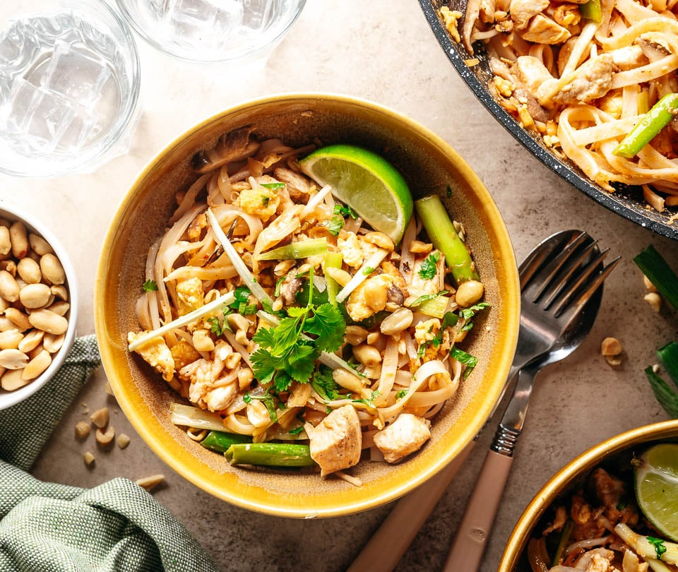

Dit gerecht is voor 4 Personen
Ingrediënten
- 150 gram platte rijstnoodles
- 250 gram kip (kipfilet of kipdijfilet in stukjes gesneden)
- 5 bosui
- 1 ui
- 1 limoen
- 2 tenen knoflook
- 2 handjes pinda's
- 100 gram shiitake (in plakjes gesneden)
- 3 eetlepels ketchup
- 1,5 eetlepel suiker
- 2 eetlepels vissaus van Megachef
- ½ eetlepel pindakaas
- ½ eetlepel sojasaus van Megachef
- ½ theelepel chiliflakes
- 2 eieren (middel)
- 100 gram taugé
- zonnebloemolie, peper en zout
- Optioneel: verse koriander naar smaak